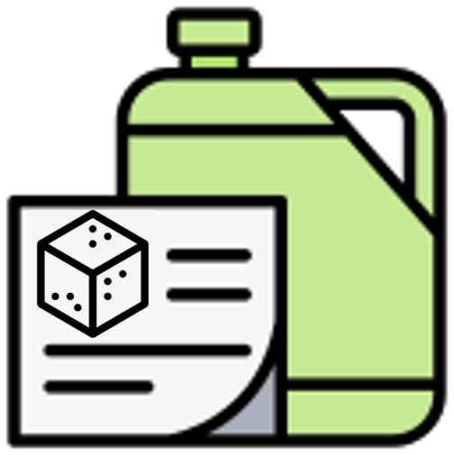
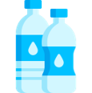

달게 먹는 당신을 달달핑으로 임명합니다!
여러분은 달고 짠 음식 중에서도 당류가 많이 함유된 단 음식을 더욱 좋아하는 달달핑이에요. 단 음식을 선호하는 식습관은 다양한 대사질환에 노출될 위험이 있답니다.
어떤 문제점이 있고, 어떤 식습관으로 건강한 식생활을 만들 수 있을지 알아볼까요?
달콤한 음료, 과자, 그리고 가공식품들... 너무 맛있지만 과당을 과하게 섭취하면 몸이 보내는 위험 신호를 놓칠 수 있습니다.
과당이 우리 몸에 미치는 영향을 하나씩 살펴볼까요?
과당은 간에서 약 90% 이상이 대사됩니다. 적당히 먹으면 에너지원으로 잘 사용되지만, 과하게 먹을 땐 문제가 생기죠. 과당이 많아지면 간이 “이걸 다 처리 못하겠어!”라며 과당을 지방으로 바꿔버립니다. 그렇게 만들어진 지방이 간에 쌓이면 바로 지방간이 되는데요, 이를 방치하면 간염이나 간경변 같은 심각한 병으로 발전할 수 있습니다.
Q. 왜 간이 지방을 저장할까?
간은 지방을 다른 기관으로 보내려면 열심히 '운반 작업'을 해야 해요. 그런데 너무 과하게 섭취된 당분은 "귀찮다!" 하고 바로 지방으로 바뀌어 간에 쌓이게 되는 거죠.
단 음식을 먹으면 혈당이 빠르게 상승해요. 췌장은 이를 조절하기 위해 인슐린이라는 호르몬을 열심히 분비합니다. 만약 당류를 과다 섭취하게 되어 혈당 상승이 반복된다면, 우리 몸의 세포들은 더이상 인슐린에 대해 민감하게 반응하지 않게 돼요. 이 상태를 ‘인슐린 저항성’이라고 하는데, 이게 계속되면 혈당이 제대로 조절되지 않아 결국 제2형 당뇨병으로 이어질 수 있습니다.
당류를 과다하게 섭취하면 인슐린 저항성이 증가하면서 인슐린의 작용이 약해집니다. 인슐린 작용 약화로 인해 세포는 혈당을 제대로 흡수하지 못하고, 혈액 중 지방산의 농도가 높아집니다.
이 지방산은 간으로 이동하여 중성지방으로 전환되고, 중성지방을 운반하는 ‘VLDL’이라는 단백질이 증가합니다. 동시에 몸에 좋은 콜레스테롤(HDL)은 감소하고, 중성지방과 나쁜 콜레스테롤(LDL)은 증가하게 됩니다.
결과적으로 혈관 건강이 악화되며, 이상지질혈증이 발생해 심혈관 질환의 위험이 높아질 수 있습니다.
자! 달고 짜게 먹는 식습관은 이렇게나 많은 문제점들이 있는데, 우리의 단짠핑들 심각성을 느끼셨나요? 여러분들은 이제 달고 짜게 먹는 식습관을 고쳐야 할 필요성이 있습니다. 앞으로의 올바른 식습관을 위한 방법을 설명드리며 달고 짜게 먹는 식습관을 고칠 수 있는 방법을 알려드릴게요! 차근차근 읽어보시고 꼭 생활 습관으로 옮기기로 해요:)
중요한 에너지원이지만 가공식품의 첨가당을 통해 과다하게 섭취되는 당류! 많은 양의 당류는 비만의 주범입니다. 이미 당 섭취를 줄이기 위해 노력하고 있으시겠지만, 건강도 지키고 맛도 놓치지 않는 당 섭취 줄이는 방법들을 더 많이 알려드릴게요. 식품을 구매할 때, 조리할 때, 섭취할 때를 기준으로 차근차근 설명해드릴테니 앞으로도 건강한 식습관을 위해 노력하도록 합시다!
[구매할 때]
1. 하루 50g, 당 섭취량을 기억하세요! 
하루 권장 첨가당 섭취량은 50g입니다. 첨가당은 하루에 50g을 넘지 않는 것이 좋아요.
가공식품을 구매할 때는 영양성분표에서 당류 함량을 꼭 확인하는 습관을 들여보세요. 작은 실천이 건강을 지킵니다!
2. 카페에서 음료 구매 시 ‘덜 달게’를 요청해요.☕
또, 커피나 음료를 주문할 땐 “당도는 낮게요!”
당도를 조절하면 맛도 깔끔해지고 건강도 챙길 수 있답니다.
[조리할 때]
3. 설탕 대신 대체 감미료를 활용해요!
요리나 음료를 만들 때 설탕 대신 스테비아나 에리스리톨 같은 칼로리가 낮은 대체 감미료를 써보세요.
단맛은 그대로인데 칼로리는 뚝! 건강한 달콤함을 즐길 수 있는 꿀팁입니다.
그러나 이러한 대체 감미료에 의존하는 것도 좋지 않다는 사실! 뭐든 적당히 사용하는 것이 제일 좋아요:)
[섭취할 때]
4. 간식을 먹을 때, 가공식품 대신 자연식품으로 바꿔보세요!
첨가당이 들어있는 초콜릿, 쿠키와 같은 간식에 자주 손이 가는 여러분!
이제는 간식으로 견과류나 과일처럼 자연 그대로의 식품을 섭취하는 것은 어떨까요?
첨가당이 다량 함유된 가공식품보다 과일과 견과류에 포함된 당류의 함량이 훨씬 적은 만큼,
적당량의 견과류(하루에 아몬드 23알 내외, 땅콩 10알 내외 등)나 사과 반쪽으로 비타민·무기질 등의 영양소를 보충하고 달콤하면서도 건강한 간식을 즐겨보아요!
5. 단맛 + 신맛 = 더욱 달달한 맛!🍋
신맛은 혀에 강렬한 자극을 주어 단맛이 더욱 두드러지게 느껴지도록 도와줍니다.
신맛은 혀의 미각 수용체의 반응을 조절하여 단맛에 대한 민감도를 높이기 때문이에요.
레몬에 설탕을 넣으면 단맛이 더욱 강조되듯이, 단 음식이 너무 먹고 싶을 때는 신 음식을 함께 섭취함으로써 첨가당의 섭취를 줄여보는 건 어떨까요?
6. 설탕 대신 양파, 파로 단맛을 내세요.🧅
양파를 잘게 썰어 천천히 볶으면 자연적인 단맛이 강화됩니다.
대파를 기름에 살짝 볶거나 구우면 은은한 단맛과 풍미가 살아납니다.
이는 “메일라드 반응”과 “캐러멜화 반응” 덕분인데요.
국, 찌개, 볶음 요리 등 다양한 요리에 양파와 파를 설탕 대체재로 활용해보세요.
7. 음료 대신 물!
달콤한 음료를 생수로 바꿔보세요! 처음엔 밍밍하게 느껴질 수 있지만, 점점 습관이 되면서 “이게 더 개운한데?”라는 생각이 들 거예요.
만약 생수만으로는 부족하다면, 얼음물 등을 통해 물의 온도를 조절하거나,
칼로리가 없는 티백 또는 비타민 C가 풍부한 레몬을 활용해보세요.
달콤한 유혹, 현명하게 선택하는 습관이 중요해요!
오늘부터 당 섭취 줄이기 시작해보세요.